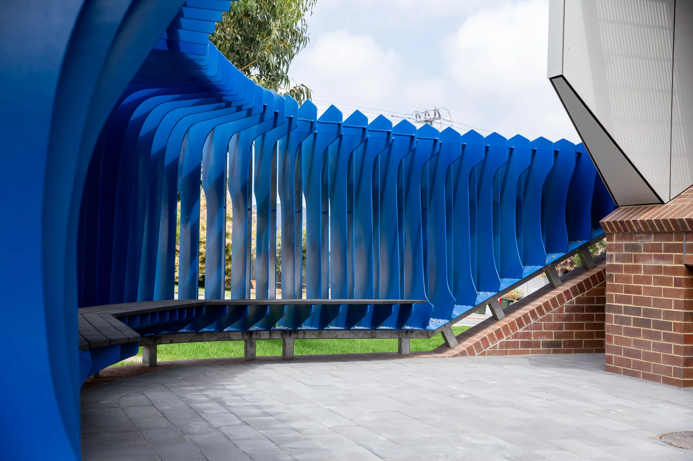
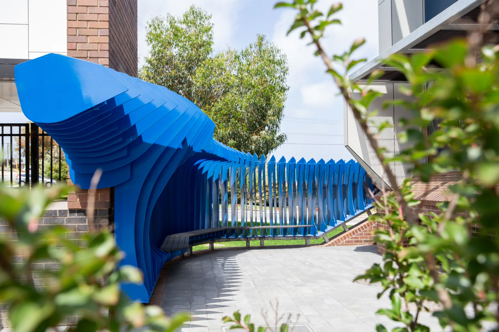
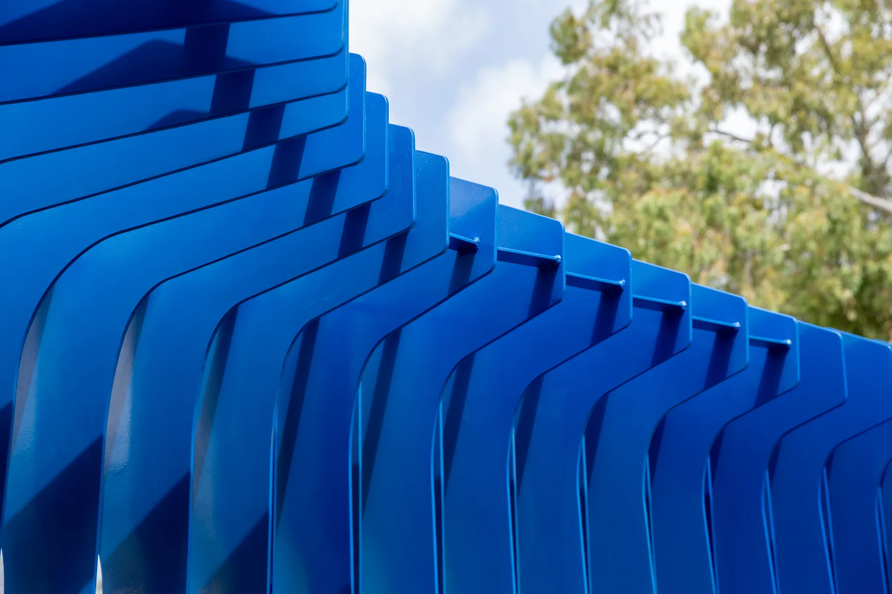
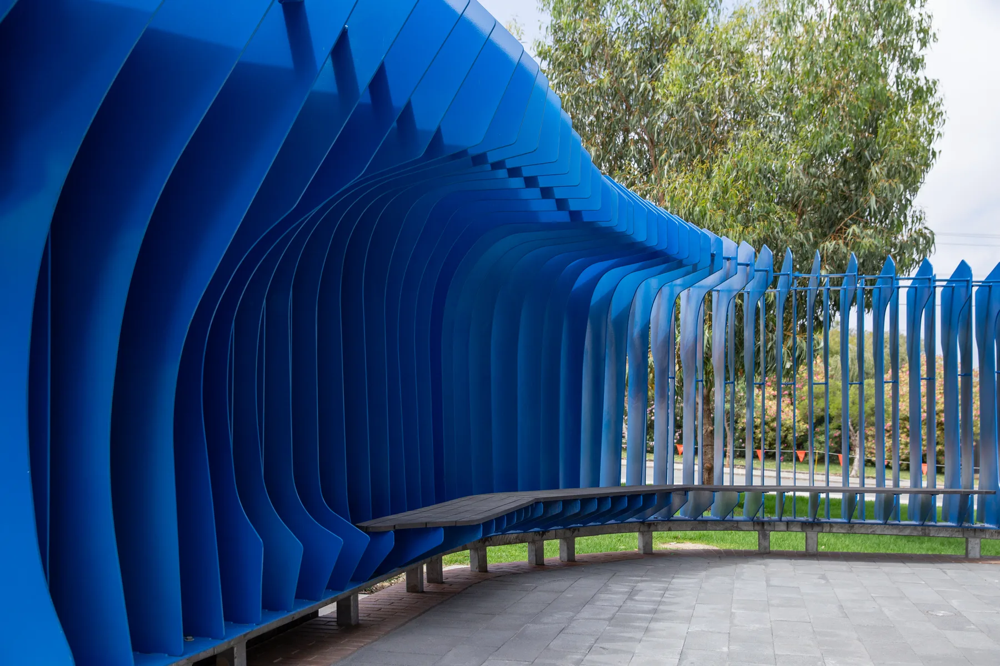
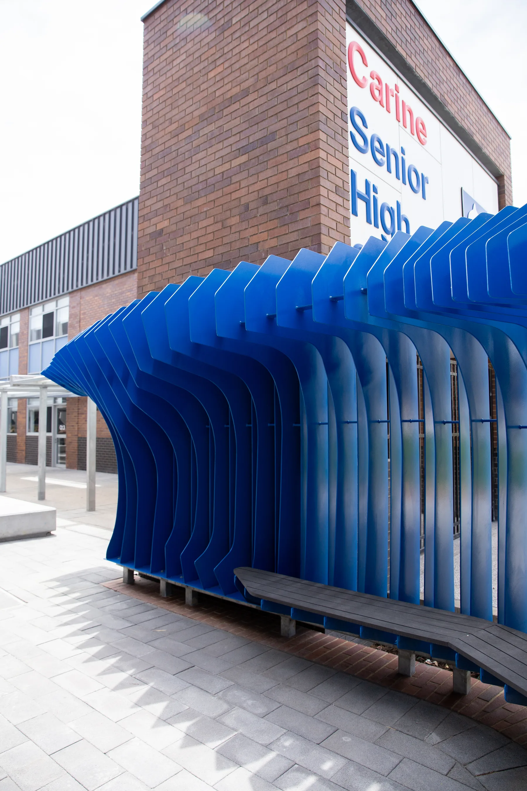
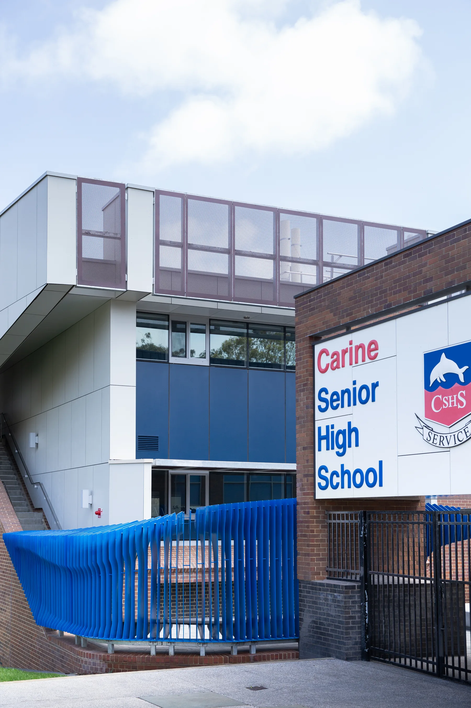
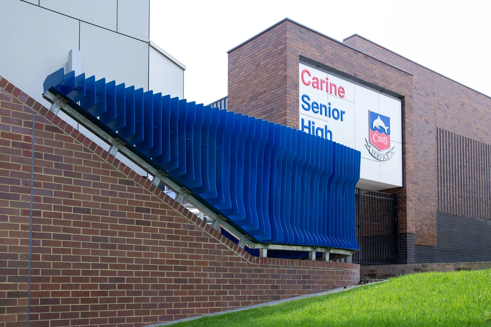
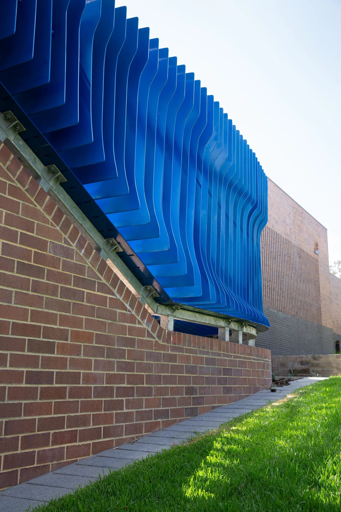
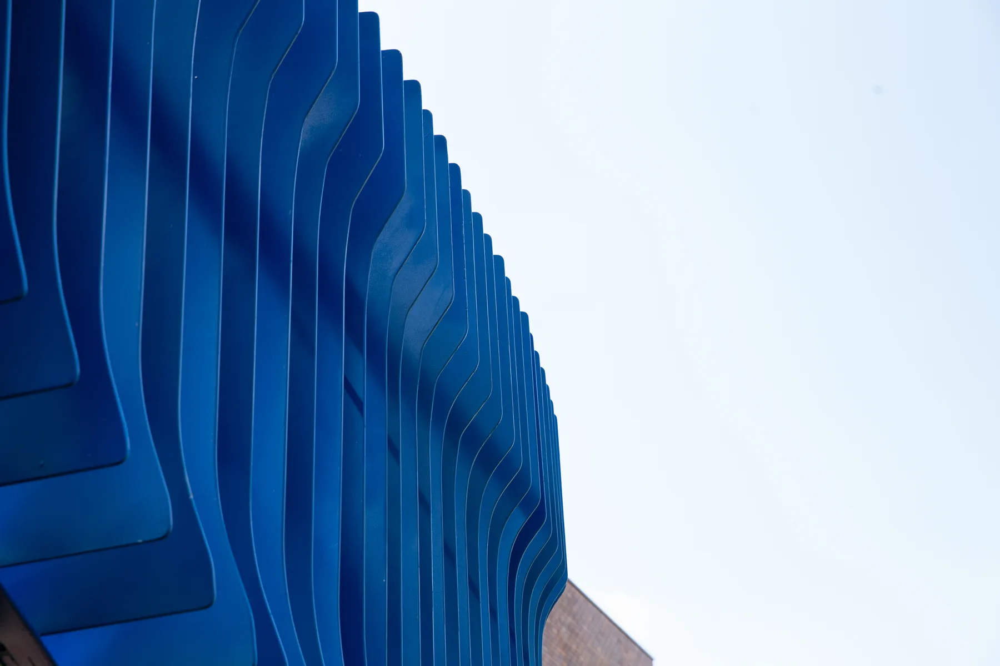

The Exchange Senior High School, Carine
Commissioned by Dept. of Education
This artwork was conceived as a metaphor for learning as a transformation from one state to another. Integrated with the surrounding landscape and architecture, it acts as a conduit between the existing and new school buildings—a form of connective tissue occupying the space between them. Its fluid geometry articulates a continuous transition while serving several functions: defining a boundary between inside and outside, extending the balustrade of a stair leading to the new building’s upper level, providing a shaded seating area with an integrated bench, and creating an artistic entrance statement for the school.
The artwork’s geometry and structure were developed from a single computational subdivision model, resolved into 109 powder-coated steel fins. These were welded together in the workshop, transported to the site as six modules and connected during installation.
- Design: Andrei Smolik, Daniel Giuffre
- Year completed: 2023
- Client: Dept. of Education
- Architect: T&Z Architects
- Fabricator: Kilmore Group
- Contractor: PS Structures
- Budget: $220,000
- Size: 7.4m x 8m x 2.8m







